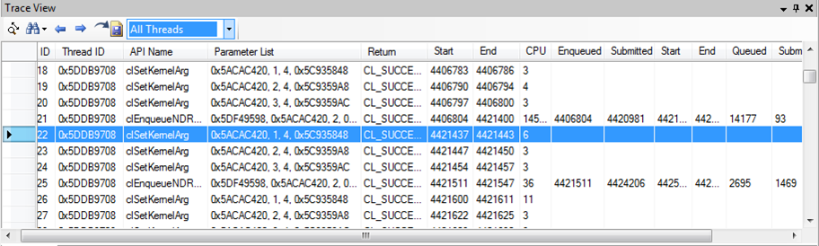

Trace View
Display API calls in a data grid with parameters, return value and timing information. All columns are sortable and selected API call will reflect in Gantt View and vice-versa.
Screenshot

Components
- Focus in Gantt View selected calls
- Search data grid by API name controls
- Show calls from all CPU threads or a particular one if multi-threaded
- Export data to CSV
- Timing Information